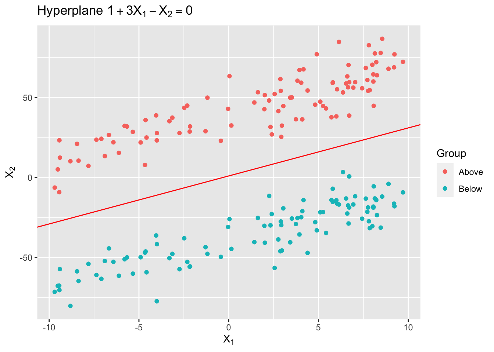
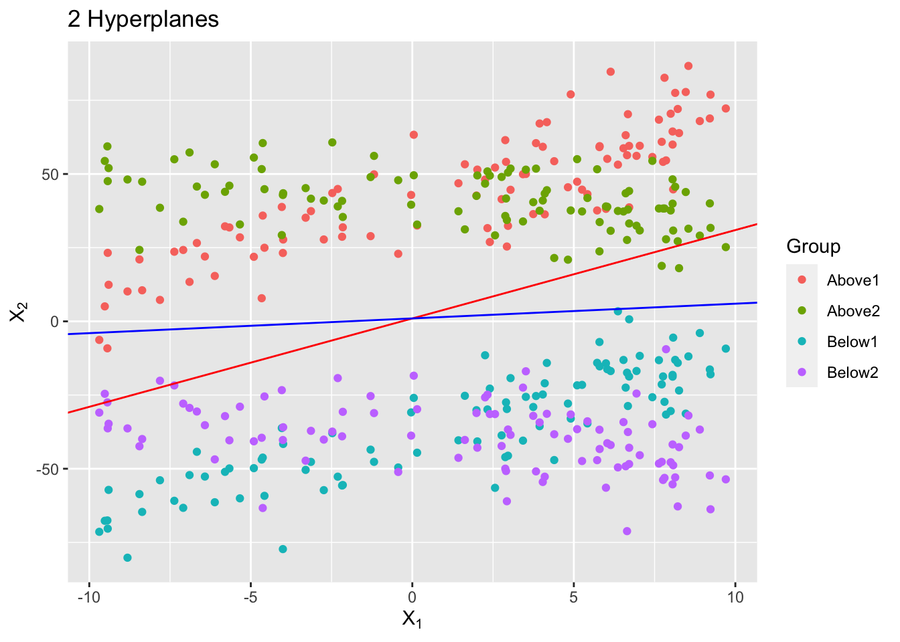
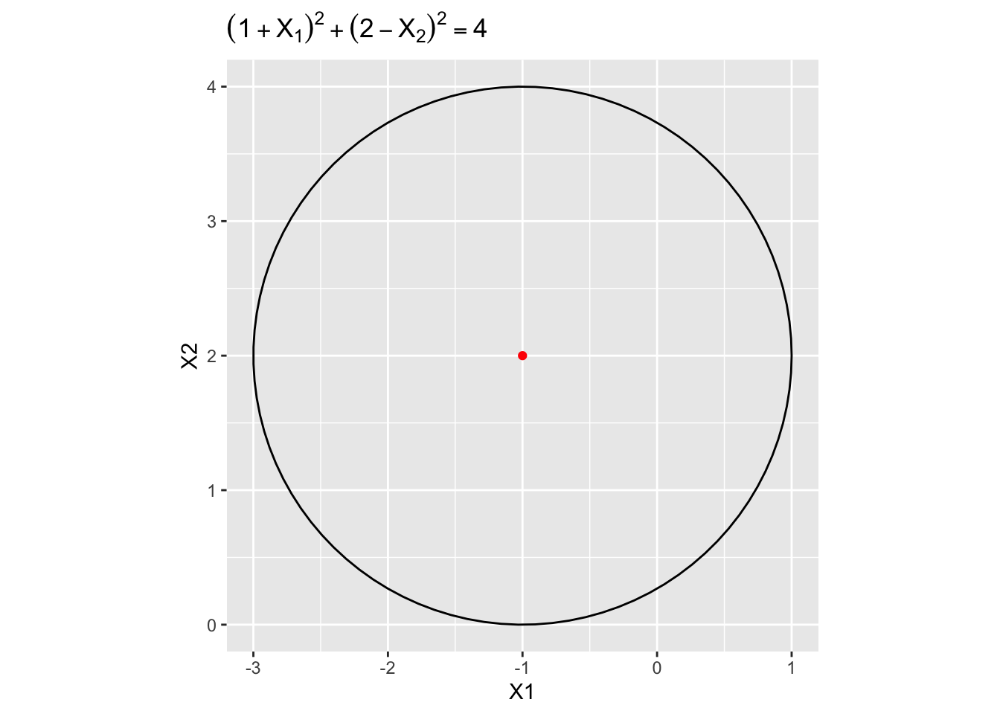
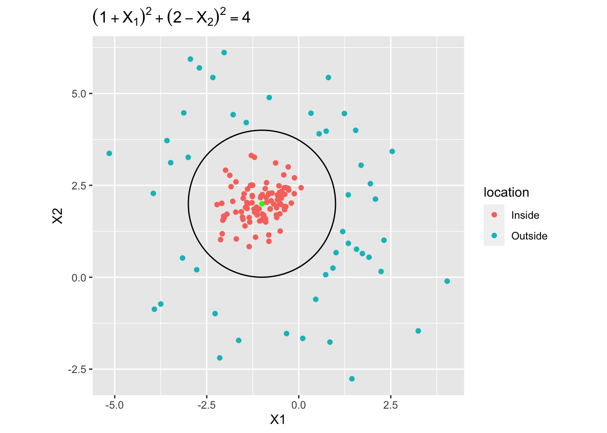

This problem involves hyperplanes in two dimensions.
(a) Sketch the hyperplane \(1 + 3X_1 − X_2 = 0\). Indicate the set of points for which \(1 + 3X_1 − X_2 > 0\), as well as the set of points for which \(1 + 3X_1 − X_2 < 0.\)
Use ggplot2 to sketch the hyperplane \(1 + 3X_1 − X_2 = 0\). As well as indicating the points.
library(ggplot2)library(dplyr)set.seed(20230920)X1 <-runif(100, -10, 10)X2_base <-1+3* X1# 2 groups of pointsX2_group1 <- X2_base +10*rnorm(100, mean =4, sd =1) X2_group2 <- X2_base -10*rnorm(100, mean =4, sd =1) data_group1 <-data.frame(X1 = X1, X2 = X2_group1, Group ='Above')data_group2 <-data.frame(X1 = X1, X2 = X2_group2, Group ='Below')data <-rbind(data_group1, data_group2)ggplot(data, aes(x = X1, y = X2, color = Group)) +geom_point() +geom_abline(intercept =1, slope =3, color ="red") +labs(title =expression("Hyperplane "*1+3* X[1] - X[2] ==0),x =expression(X[1]),y =expression(X[2]))

(b) On the same plot, sketch the hyperplane \(−2 + X_1 + 2X_2 = 0\). Indicate the set of points for which \(−2 + X_1 + 2X_2 > 0\), as well as the set of points for which \(−2 + X_1 + 2X_2 < 0\).
Add another pair of point sets to express this hyperplane:
library(ggplot2)library(dplyr)set.seed(20230920)X1 <-runif(100, -10, 10)X2_base_1 <-1+3* X1X2_base_2 <-1-0.5* X1# 2 groups of pointsX2_group1 <- X2_base_1 +10*rnorm(100, mean =4, sd =1) X2_group2 <- X2_base_1 -10*rnorm(100, mean =4, sd =1) X2_group3 <- X2_base_2 +10*rnorm(100, mean =4, sd =1) X2_group4 <- X2_base_2 -10*rnorm(100, mean =4, sd =1) data_group1 <-data.frame(X1 = X1, X2 = X2_group1, Group ='Above1')data_group2 <-data.frame(X1 = X1, X2 = X2_group2, Group ='Below1')data_group3 <-data.frame(X1 = X1, X2 = X2_group3, Group ='Above2')data_group4 <-data.frame(X1 = X1, X2 = X2_group4, Group ='Below2')data <-rbind(data_group1, data_group2, data_group3, data_group4)ggplot(data, aes(x = X1, y = X2, color = Group)) +geom_point() +geom_abline(intercept =1, slope =3, color ="red") +geom_abline(intercept =1, slope =0.5, color ="blue") +labs(title ="2 Hyperplanes",x =expression(X[1]),y =expression(X[2]))

As we can see, the new blue line stands for the new hyperplane, the green points stands for \(−2 + X_1 + 2X_2 > 0\), and the purple points stand for \(−2 + X_1 + 2X_2 < 0\)
ISL Exercise 9.7.2 (10pts)
We have seen that in p = 2 dimensions, a linear decision boundary takes the form \(\beta_0+ \beta_1X_1+ \beta_2X_2 = 0\). We now investigate a non-linear decision boundary.
(a) Sketch the curve
\((1 + X_1)^2 + (2 − X_2)^2 = 4\).
Obviously it’s a circle with a center at (-1, 2), and radius of 2. Use ggplot to draw the circle.
# center and radiush <--1k <-2r <-2# points on the circletheta <-seq(0, 2*pi, length.out =100)x <- h + r *cos(theta)y <- k + r *sin(theta)circle_data <-data.frame(x, y)ggplot(circle_data, aes(x = x, y = y)) +geom_path() +geom_point(data =data.frame(x = h, y = k), aes(x = x, y = y), color ="red") +labs(title =expression((1+ X[1])^2+ (2- X[2])^2==4),x ="X1", y ="X2")+coord_fixed()

(b) On your sketch, indicate the set of points for which
\((1 + X_1)^2 + (2 − X_2)^2 > 4\),
as well as the set of points for which
\((1 + X_1)^2 + (2 − X_2)^2 < 4\).
Simply add two sets of point inside and outside
# center and radiush <--1k <-2r <-2# points on the circletheta <-seq(0, 2*pi, length.out =100)x <- h + r *cos(theta)y <- k + r *sin(theta)circle_data <-data.frame(x, y)set.seed(20230920)points_inside <-data.frame(x =rnorm(100, -1, 0.5), y =rnorm(100, 2, 0.5))points_inside <- points_inside[with(points_inside, (x +1)^2+ (y -2)^2<=3.5),]points_outside <-data.frame(x =c(rnorm(50, -1, 2), rnorm(50, -1, 2)), y =c(rnorm(50, 2, 2), rnorm(50, 2, 2)))points_outside <- points_outside[with(points_outside, (x +1)^2+ (y -2)^2>5),]points_inside$location <-'Inside'points_outside$location <-'Outside'points <-rbind(points_inside, points_outside)ggplot(circle_data, aes(x = x, y = y)) +geom_path() +geom_point(data =data.frame(x = h, y = k), aes(x = x, y = y), color ="green") +geom_point(data = points, aes(x = x, y = y, color = location)) +labs(title =expression((1+ X[1])^2+ (2- X[2])^2==4),x ="X1", y ="X2")+coord_fixed()

As shown above, the cyan points are those \((1 + X_1)^2 + (2 − X_2)^2 > 4\), while the light red points are \((1 + X_1)^2 + (2 − X_2)^2 < 4\).
(c) Suppose that a classifier assigns an observation to the blue class if
\((1 + X_1)^2 + (2 − X_2)^2 > 4\)
and to the red class otherwise. To what class is the observation and to the red class otherwise. To what class is the observation (0, 0) classified? (−1, 1)? (2, 2)? (3, 8)?
Blue: (0, 0), (2, 2), (3, 8)
Red: (-1, 1)
(d) Argue that while the decision boundary in (c) is not linear in terms of \(X_1\) and \(X_2\), it is linear in terms of \(X_1\), \(X_1^2\), \(X_2\), \(X_2^2\).
We can transform the boundary \((1 + X_1)^2 + (2 − X_2)^2 > 4\):
Here, we have a linear equation in terms of the variables \(X_1\), \(X_1^2\), \(X_2\), \(X_2^2\)
Support vector machines (SVMs) on the Carseats data set (30pts)
Follow the machine learning workflow to train support vector classifier (same as SVM with linear kernel), SVM with polynomial kernel (tune the degree and regularization parameter \(C\)), and SVM with radial kernel (tune the scale parameter \(\gamma\) and regularization parameter \(C\)) for classifying Sales<=8 versus Sales>8. Use the same seed as in your HW4 for the initial test/train split and compare the final test AUC and accuracy to those methods you tried in HW4.
Let’s created a binary variable represents the numeric relationship between sales and 8.
svm_recipe <-recipe( Sales ~ ., data = Carseats_training ) %>%step_naomit(all_predictors()) %>%# # create traditional dummy variables (necessary for SVM)step_dummy(all_nominal_predictors()) %>%# zero-variance filterstep_zv(all_numeric_predictors()) %>%# # center and scale numeric data step_normalize(all_numeric_predictors()) %>%# estimate the means and standard deviationsprep(training = Carseats_training, retain =TRUE)svm_recipe
Radial Basis Function Support Vector Machine Model Specification (classification)
Main Arguments:
cost = tune()
rbf_sigma = tune()
Computational engine: kernlab
From the test metrics, we can see that the accuracy is 0.900000, and the ROC AUC is 0.9674452
Among the three models, the SVM with polynomial kernel has the highest ROC AUC, and the accuracy is also high. It’s also better than the results in hw4, which are trained by classification tree, random forest, and boosting.
Bonus (10pts)
Let \[
f(X) = \beta_0 + \beta_1 X_1 + \cdots + \beta_p X_p = \beta_0 + \beta^T X.
\] Then \(f(X)=0\) defines a hyperplane in \(\mathbb{R}^p\). Show that \(f(x)\) is proportional to the signed distance of a point \(x\) to the hyperplane \(f(X) = 0\).
We can see that \(\boldsymbol \beta=(\beta_1, \beta_2, ..., \beta_p)^\top\) is a normal vector if this hyperplane.
The signed distance of \(x\) to \(f(X) = 0\) is given by the projection of the vector from \(x_0\) on the hyperplane to \(x\) onto the normal vector \(\boldsymbol \beta\). \(x_0\) satisfies \(f(x_0) = 0\).
This \(d\) can be calculated by this projection, which is \(\frac{\beta_0 + \beta^T X}{\sqrt {\beta_1^2+\beta_2^2+...+\beta_p^2}}\) .
So, we have \[
d=\frac{\beta_0 + \beta^T X}{\sqrt {\beta_1^2+\beta_2^2+...+\beta_p^2}}
\]
So \(f(x)\) is proportional to the signed distance of a point \(x\) to the hyperplane \(f(X) = 0\), this proportional value is \(\frac{1}{\sqrt {\beta_1^2+\beta_2^2+...+\beta_p^2}}\)